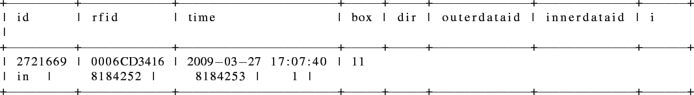

« data table | Contents | res table »
dir table
Another perl script searches for matching pairs of datasets in the |data| table which form a direction result.
When a mouse carrying an RFID tag passes the two antennas attached to an artificial nestbox, within a certain time, it is possible to determine if the mouse went in or out of that box (see section ![[*]](file:/opt/local/share/lib/latex2html/icons/crossref.png) on page for details about the script).
on page for details about the script).
Shown next is a row of the |dir| table followed by short explanation of the columns.

- The |id| and |rfid| columns have the identical function as in the |data| table.
- The |time| value denotes the moment the the |rfid| entered or left the |box|.
- The |box| value is a reference to a value in the |id| column of the |box| table (see paragraph on page ).
- The |dir| value is either in or out and depicts the direction.
- The |outerdataid| and |innerdataid| values can be used to backtrack the datasets in the |data| table making up the direction result. This is explained in detail in section on page .
- The |i| value is an indicator if the direction result could is used in a (see ). Table on page gives an overview of the |i| values in the different tables.


Next: res table
Up: Processed data
Previous: data table
Contents
rleuthold@access.ch